01
Права дитини – у центрі дискусії
Учасники наголосили, що питання не можна зводити лише до статусу одного з батьків. У центрі має бути дитина з інвалідністю, її потреби та принцип найкращих інтересів дитини.
Права дітей з інвалідністю під час війни – результати події, документи, фотозвіт і подальші кроки адвокації в контексті законопроєкту № 15057.
юридичних та фізичних осіб уже підтримали Спільну резолюцію.
Документ залишається відкритим для приєднання.
848
На сьогодні резолюцію підтримало двоє народних депутатів, Нацасамблея осіб з інвалідністю України (а це – понад 120 організацій), ГС «Мережа батьківських організацій» (понад 40 організацій), близько 20 інших правозахисних організацій, понад 20 експертів у галузях права, медицини, психології та реабілітації – загалом 848 юридичних та фізичних осіб.
Спільна резолюція залишається відкритою для приєднання.
Серед учасників заходу були представники міжнародних, державних, правозахисних, батьківських і громадських організацій, а також родини дітей з інвалідністю.
Подія зібрала представників громадських організацій, правозахисної спільноти, міжнародних і державних інституцій, а також батьків дітей з інвалідністю.
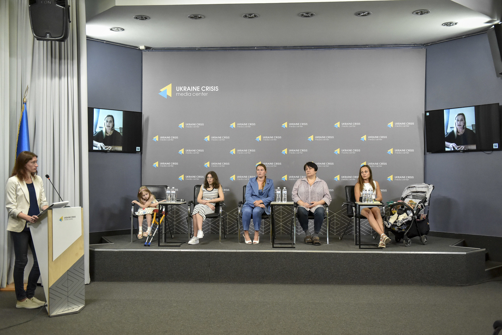
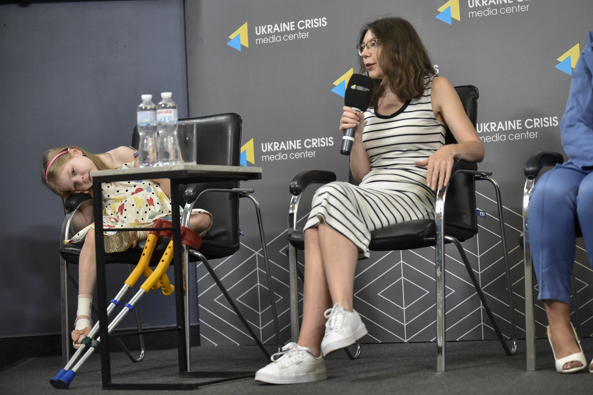
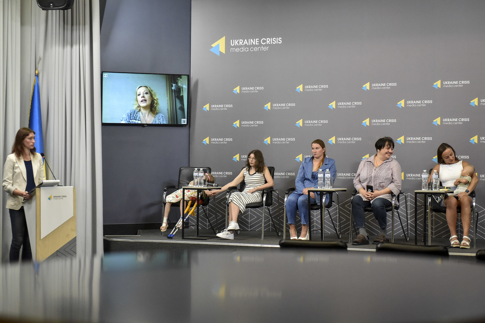
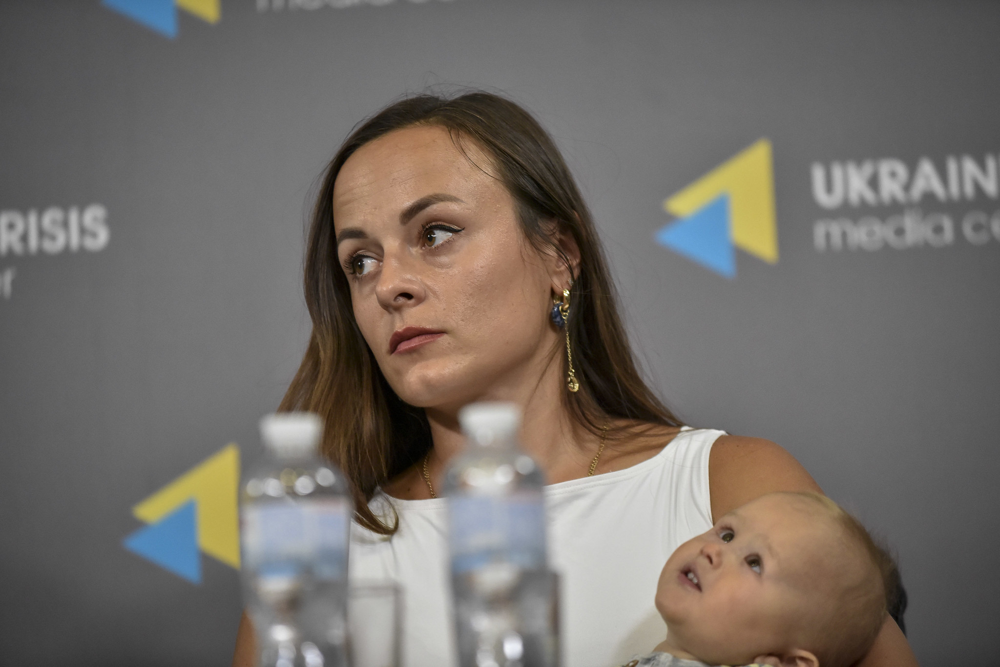
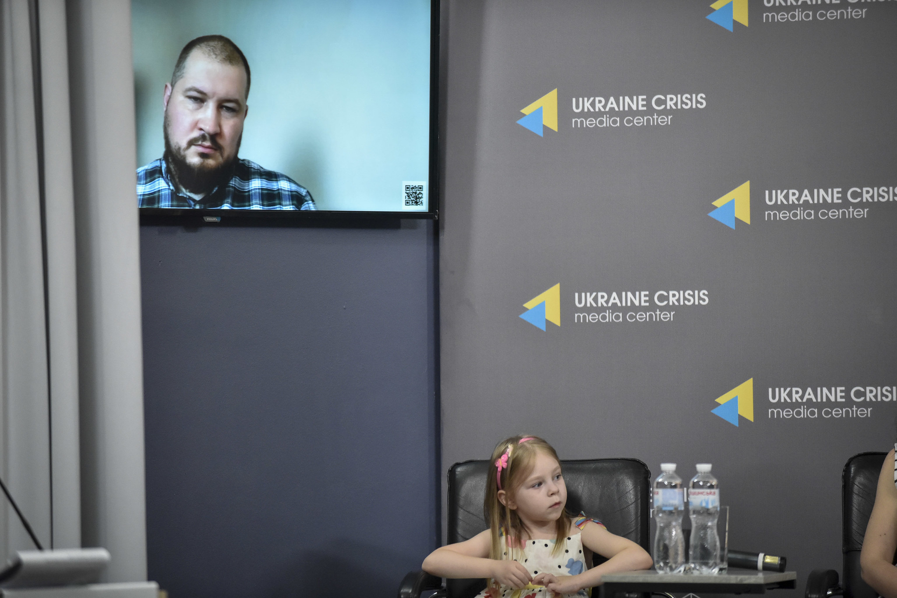
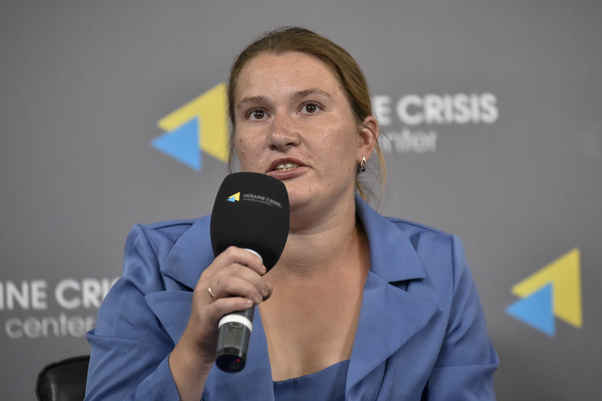
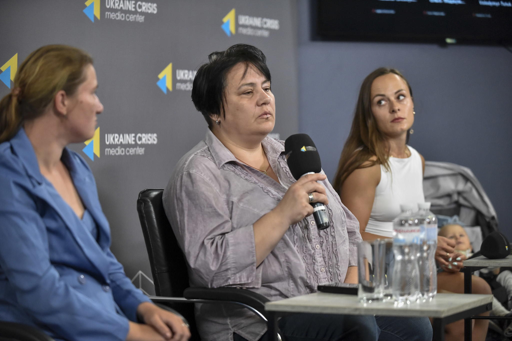
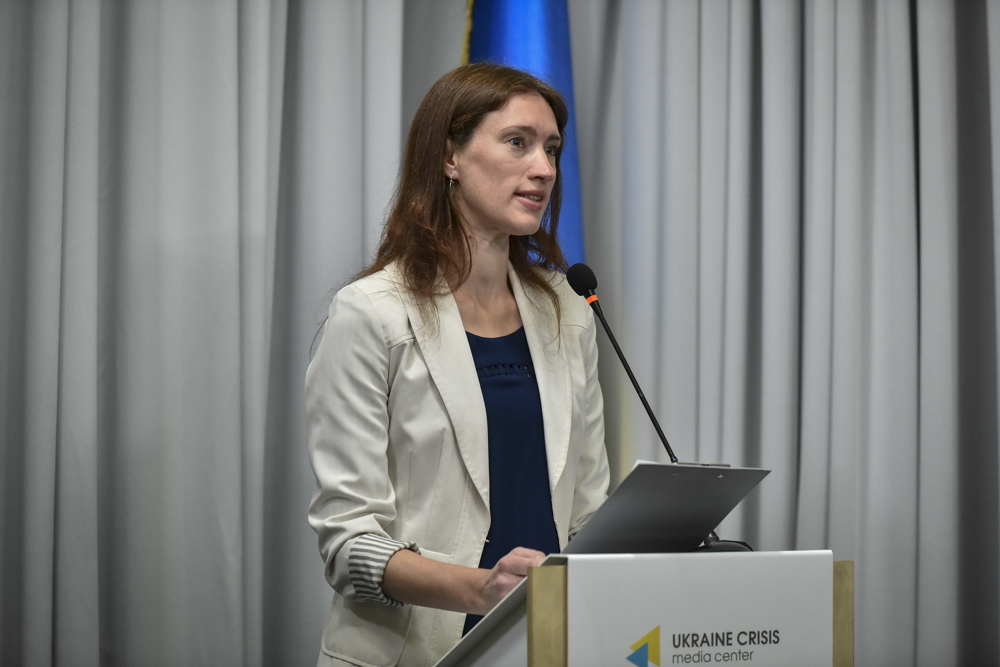
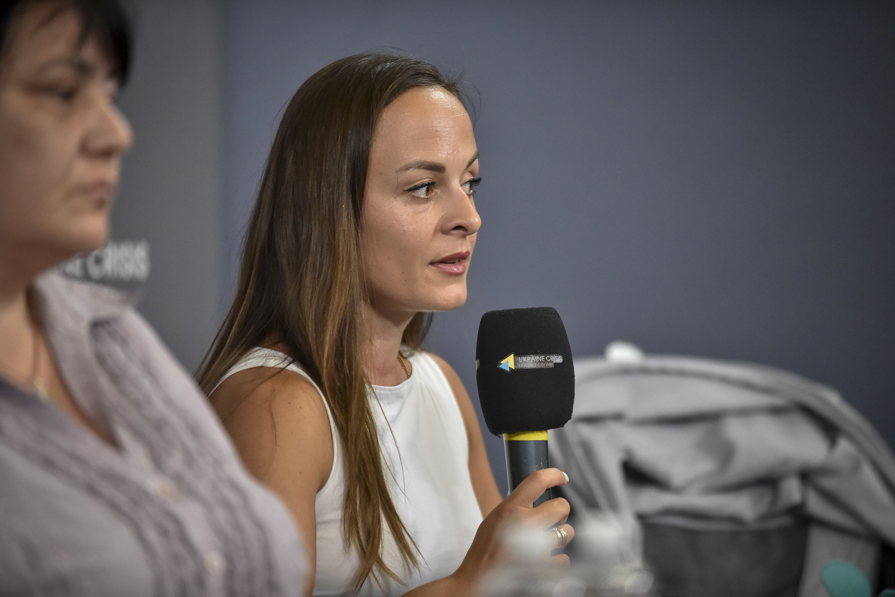
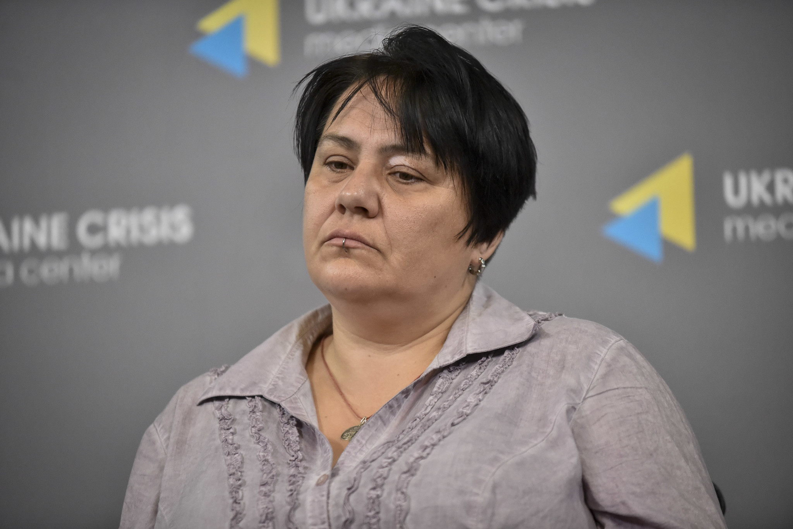
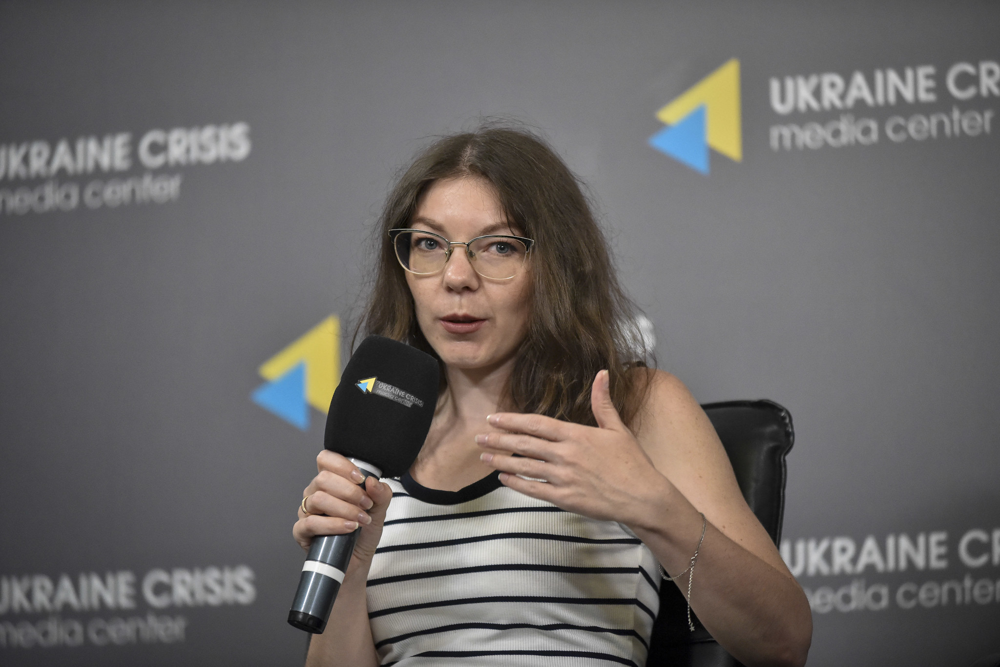
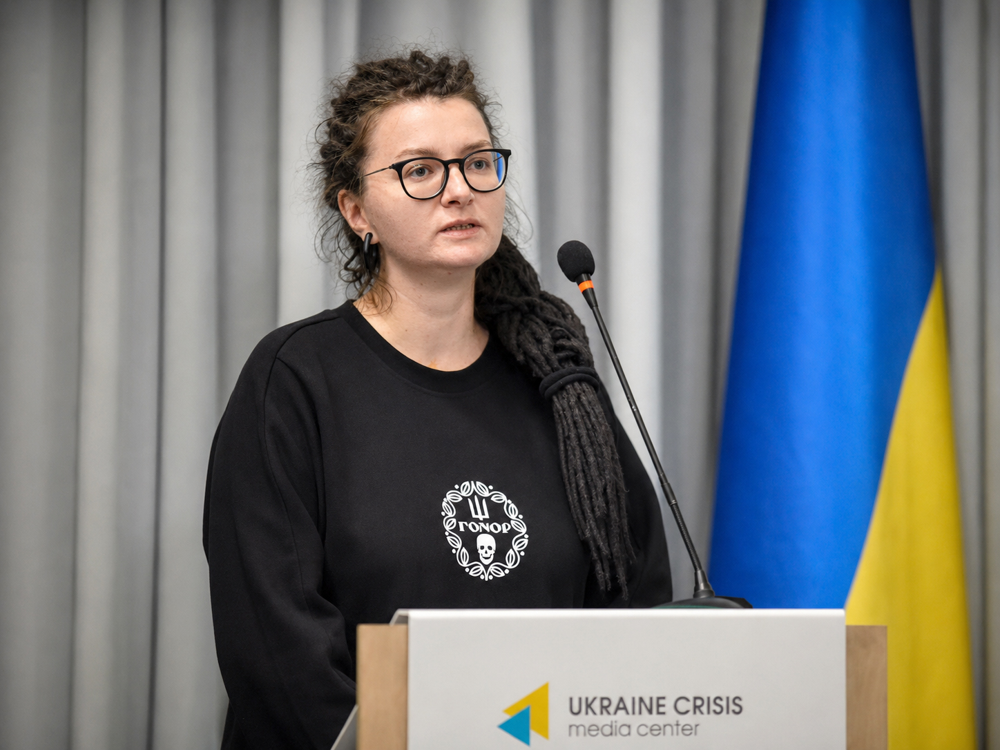
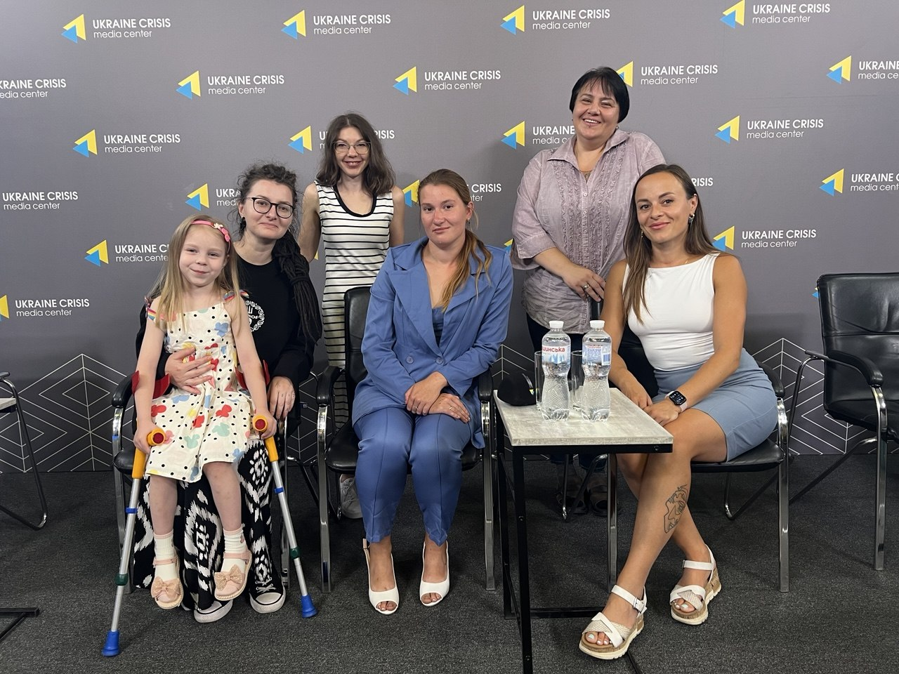
Презентація була побудована довкола правового, соціального, медичного та правозахисного аспектів проблеми.
Учасники наголосили, що питання не можна зводити лише до статусу одного з батьків. У центрі має бути дитина з інвалідністю, її потреби та принцип найкращих інтересів дитини.
Обговорювалися колізії між нормами законодавства про мобілізацію та проходження військової служби, а також конституційні й міжнародні гарантії рівності та недискримінації.
Звучали реальні історії про медикаментозну терапію, реабілітацію, логістику, безпеку, кризовий догляд, соціальні послуги та постійне фізичне й емоційне навантаження на родини.
Окрему увагу приділили необхідності рішень, які ґрунтуються на фактах, офіційних даних і відкритому професійному діалозі з державними органами.
«Держава визнає, що наявність інвалідності у дитини є окремою і самостійною підставою для надання відстрочки батькам. Однак під час мобілізації, коли така дитина з'являється в сім'ї, держава перестає визнавати таку обставину як самостійну».
«Але в центрі всієї цієї дискусії має стояти дитина з інвалідністю і її потреби».
«Закон України «Про охорону дитинства» в першу чергу визнає охорону дитинства в Україні як стратегічно загальнонаціональний пріоритет, який має важливе значення для забезпечення національної безпеки України».
«Реабілітація – відновлення втрачених функцій, абілітація – це здобуття нових навичок, з якими дитина житиме далі. Це відбувається впродовж кожного божого дня, 365 днів на рік».
«Мама сама теж має функціонувати як людина. Вона фізично не може витрачати 24/7 винятково на дитину».
Наявність батька – це не лише допомога для дитини, це допомога й для матері, для родини, яка перебуває в дуже складних обставинах.
«Якщо ми перестаємо піклуватися про слабших, тоді наше суспільство втрачає шанси на позитивний розвиток у майбутньому».
«Я кожен раз жертвую розвитком і корекцією однієї з дітей – обираю, кому з них важливіше, бо я не можу фізично розірватися в два місця одночасно».
«Ми вже стільки віддали цій державі – але коли потребуємо навзаєм хоч трішки, то стикаємося з повним нерозумінням».
«Іноді виникає відчуття, що ти в тупику своїх можливостей. Ти себе питаєш: що я можу цій дитині дати, якщо я не справляюся?»
Ці дані наведено у відповіді Міністерства оборони України на депутатське звернення. Саме вони стали однією з фактологічних опор для подальшої адвокації.
У відповіді Міністерства оборони України зазначено, що за оперативними даними військову службу проходять близько 2 тисяч військовослужбовців, які мають дитину з інвалідністю до 18 років.
Повний текст Спільної резолюції щодо рівного захисту прав дітей з інвалідністю
Реєстр юридичних і фізичних осіб, які приєдналися до Спільної резолюції станом на сьогодні.
Офіційна відповідь Міністерства оборони України щодо близько 2 тисяч військовослужбовців, які мають дитину з інвалідністю віком до 18 років.
Публічна презентація була лише одним із етапів адвокації. Далі триває офіційна комунікація з державними органами та міжнародними інституціями.
Направлено звернення до відповідальних державних органів із запитом щодо оцінки впливу та підстав офіційних позицій.
Отримані відповіді будуть систематизовані та використані для подальшої адвокації на національному рівні.
Після цього пакет документів і позицій подаватиметься до Президента України та міжнародних правозахисних інституцій.
Ми продовжуємо збір підтримки від правозахисних, громадських, професійних та батьківських спільнот. Якщо ваша організація або ви особисто підтримуєте позицію резолюції, надішліть нам заяву-приєднання.